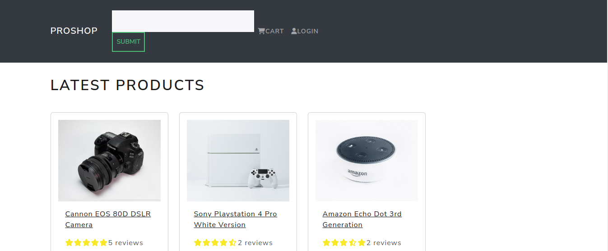
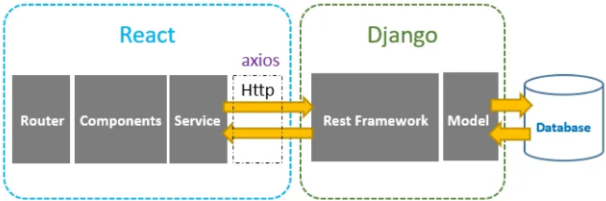

I am thrilled to share our latest project, an E-Commerce website developed using React, Django, Django REST Framework, and a range of other cutting-edge technologies. In this blog post, I will provide an overview of our project, highlight the challenges we faced, and discuss the valuable lessons we learned along the way.
This project was a joint effort between myself, Douglous Sobei, and my talented partner, John Nyallu. Coming from different backgrounds, I had a strong foundation in React development, while John brought his expertise in Django and backend development to the table. Over the course of several months, we collaborated closely, leveraging our complementary skills to create a robust and feature-rich E-Commerce platform.
Our project aimed to build a user-friendly and scalable E-Commerce website that offers a seamless shopping experience. We envisioned catering to a diverse range of customers, providing them with a platform to browse and purchase products with ease. Our goal was to showcase our technical abilities while delivering a solution that meets the needs of both customers and online retailers.
To provide some context, I studied public management in school and pursued a career in human resources. However, my interest in technology began to grow, and I found myself fascinated by the endless possibilities it offered. This led me to transition into the field of technology, where I started exploring various programming languages. The opportunity to work on this E-Commerce project aligned perfectly with my passion for technology, allowing me to combine my newfound skills with my background in management.
Our project has yielded several significant accomplishments that we are proud to share. Firstly, we successfully integrated React as the frontend framework and Django as the backend framework, leveraging the power of Django REST Framework for building the API. This allowed us to create a seamless flow of data between the frontend and backend, ensuring a smooth user experience.
We carefully selected a range of technologies to ensure the best outcome for our project. For the frontend, we utilized React, Redux, Bootstrap CSS, HTML, and various other JavaScript libraries. On the backend, we leveraged Django, Django REST Framework, and serializers. For database management, we opted for AWS services, including Amazon RDS for PostgreSQL and S3 for photo storage. Additionally, we deployed our application on Heroku, ensuring accessibility and scalability.
Our E-Commerce website boasts several noteworthy features. We implemented a comprehensive product homepage, complete with product lists, search functionality, and pagination for seamless navigation. Users can easily add items to their shopping cart, provide shipping addresses, and proceed to a secure checkout process. We incorporated user authentication and registration functionalities, allowing users to create accounts and manage their profiles. Additionally, we developed an intuitive admin screen for managing products, orders, and user data. Finally, we integrated a payment method functionality using PayPal Sandbox for secure transactions.
One of the most challenging technical hurdles we faced was implementing the user review feature. We needed to create a system that allowed users to rate and provide feedback on products. To overcome this, we adopted a dynamic and interactive approach, utilizing React components and Django models to capture and display user reviews. We implemented complex data relationships and developed robust validation mechanisms to ensure the integrity and accuracy of user reviews. Through careful planning, rigorous testing, and iterative development, we successfully delivered a seamless user review feature.
This project has been a tremendous learning experience for both of us. We have gained a deep understanding of integrating React and Django, harnessing their combined power to create a feature-rich application. We also learned the importance of effective collaboration and communication in a team setting, as well as the significance of thorough planning and agile development practices. Additionally, we discovered the value of user feedback and how it shapes the evolution of a product.
This project has undoubtedly shaped our engineering path for the future. We are inspired to explore more advanced technologies, refine our skills, and tackle even more challenging projects. Our experience has solidified our belief in the power of technology to solve real-world problems and improve user experiences.
Building an E-Commerce website with React and Django has been an exciting and rewarding journey. We are proud of the results we achieved and the skills we developed throughout this project. Our collaboration, technical expertise, and dedication have culminated in an E-Commerce platform that offers a seamless shopping experience for users. We invite you to explore our project by visiting the deployed page at project page URL and learn more about our journey on the project's landing page project landing page URL.